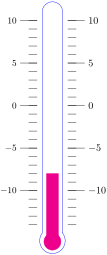
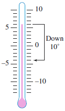
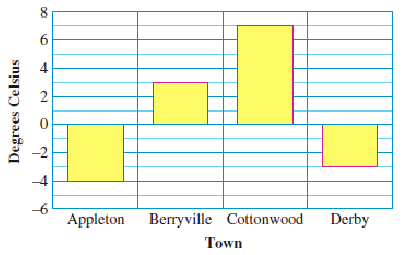

The picture above shows part of the electronic display above a stock market trading floor. Notice the numbers in the column on the right. Most of these are negative numbers, which tell us that the stock has decreased in value. The world of finance is just one of the areas where negative numbers are useful.
What are negative numbers? In some situations, we can think of them as opposites.
Activity4.4.1.Opposites.
Fill in the list below with opposites. The first two are done for you.
We can use a thermometer to visualize opposites as temperatures.
On the thermometer at right, the opposite of five degrees above zero is five degrees below zero.
Five degrees below zero is also called negative five degrees, and is written 5.
Temperatures below 0 are represented by negative numbers. Temperatures above zero degrees are called positive.
Definition.
A negative number is a number less than zero. The symbol \(\large -\) in front of a number means negative or opposite of.
Example4.4.1.
Sketch thermometers that show these temperatures.
\(\displaystyle 14 \degree\)
\(\displaystyle -8 \degree\)
Solution.

In part (a), the red line stops at 14 degrees above zero. In part (b), the red line stops at 8 degrees below zero.
Checkpoint4.4.2.
Fill in the thermometer at right to show a temperature of \(-4 \degree\text{.}\)
Answer.
Here are some more examples of how negative numbers are used:
Elevations above sea level are given by positive numbers, and elevations below sea level are given by negative numbers.
If your checking account is overdrawn it has a negative balance.
Gains and losses in football and other sports are recorded as positive and negative numbers.
In general, positive numbers denote gains, increases, profits, and the like, and negative numbers denote losses or decreases.
Subsection4.4.2Signed Numbers
When we deal with positive and negative numbers together, we call them signed numbers.
Note4.4.3.
When we work with signed numbers, we use the symbol \(\large +\) to indicate a positive number. For example, \(+3\) means positive 3. However, unless some special distinction is needed, we usually write positive 3 as just 3.
Example4.4.4.
Use a signed number to describe each situation.
Death Valley is 273 feet below sea level. What is its elevation?
The Very Big Corporation ended 2015 with a deficit of 8 billion dollars. What is its net worth?
Solution.
The elevation of Death Valley is \(-273\) feet.
The net worth of the Very Big Corporation is \(-8\) billion dollars.
Checkpoint4.4.5.
Write a sentence using a signed number to describe each situation.
The water level in Pyramid Lake dropped 30 inches below normal.
Callies checking account is overdrawn by $50.
Answer.
The water level in Pyramid Lake is \(-30\) inches.
The balance of Callies checking account is \(-50\) dollars.
We can use a bar graph to display both positive and negative numbers. Bars that extend above the zero line indicate positive values, and bars that extend below the zero line indicate negative values. (See Section 2.3 if you would like to review bar graphs.)
Example4.4.6.
The bar graph below shows normal low temperatures, indegrees Celsius, for each month in Bismarck, North Dakota.
What is normally the low temperature in December?
Which month normally has the coldest temperature? What is the coldest temperature?
Solution.
The bar for December extends down to \(-16\text{,}\) so the normal low for December is \(-16 \degree\) Celsius.
January has the coldest temperature, \(-19 \degree\) Celsius.
Checkpoint4.4.7.
Look at the bar graph in Example 4.4.6. What is the normal low temperature in Bismarck in February? Is it colder in Bismarck in February or in December?
Which two months have the same negative normal low temperature? What is that temperature?
Answer.
\(-15 \degree\) C, December
March and November, \(-8 \degree\) C
Subsection4.4.3The Integers
In Section 2.1 we used number lines to compare decimal numbers. Now well extend our number lines to include negative numbers. Here is an example.
How to draw a number line.
Begin by marking a position for zero in the middle of the line.
Choose a length to represent one unit, and mark off the counting numbers (1, 2, 3, etc.) at equal intervals to the right of zero. These marks represent positive numbers.
Each positive number has its opposite or negative to the left of zero. For example, if we mark off three units to the left of zero, we come to the opposite of 3, or \(-3\text{.}\) The marks to the left of zero represent negative numbers.
The arrow at either end means that the number line continues forever.
The numbers \(-16, ~~ \dfrac{20}{4} \) (which equals 5), and \(0\) are integers.
Checkpoint4.4.9.
List all the integers between \(-5\) and \(4\text{.}\)
Answer.
\(-4,~-3,~-2,~-1,~0,~1,~2,~3\)
Which is colder, a temperature of \(-5 \degree\) or a temperature of \(-10 \degree\text{?}\)
Because \(-10 \degree\) is colder, it makes sense to say that \(-10\) is less than \(-5\text{.}\) On the number line, \(-10\) lies to the left of\(-5,~\) as shown below.
Note4.4.10.
Numbers increase as we move from left to right on the number line. For example, \(-4\) is less than \(-3\text{,}\)\(-2\) is less than 0, and 3 is less than 6. In particular, every negative number is less than every positive number.
In Section 1.4 we encountered inequality symbols to denote "less than" and "greater than".
Inequality Symbols.
\begin{align*}
\amp \blert{\large \lt} \hphantom{0000} \text{ means } \hphantom{0000} \blert{\text{is less than}}\\
\amp \blert{\large \gt} \hphantom{0000}\text{ means } \hphantom{0000} \blert{\text{is greater than}}
\end{align*}
These two new symbols, \(\lt\) and \(\gt\text{,}\) are called inequality symbols, to distinguish them from the equality symbol, \(=\text{.}\)
Example4.4.11.
Use inequality symbols to write the following phrases.
\(-9\) is less than \(4\)
\(-1\) is greater than \(-12\)
Solution.
\(\displaystyle -9 \lt 4\)
\(\displaystyle -1 \gt -12\)
Note4.4.12.
We can show an inequality in two ways:
\begin{equation*}
-1 \gt -12 ~~~~ (\text{or } -1 ~~\text{ is greater than } -12)
\end{equation*}
means the same as
\begin{equation*}
-12 \lt -1 ~~~~ (\text{or } -12 ~~\text{ is less than } -1)
\end{equation*}
Checkpoint4.4.13.
Use inequality symbols to write the phrase in two different ways: \(~~~-2\) is greater than \(-10\text{.}\)
Answer.
\(-2 \gt -10~\text{,}\)\(~-10 \lt -2\)
Subsection4.4.4Graphing on a Number Line
To show a particular number on the number line, we place a dot at its position. This is called the graph of the number. Fractions, such as \(2\dfrac{3}{4}\) or 4.8, are located between the integers on a number line.
We graph fractions by placing dots between the appropriate integers on the number line. For example, we graph \(5 \dfrac{1}{4}\) between 5 and 6. The completed graph is shown below.
Note4.4.15.
In Example 4.4.14, notice that \(-2.5\) is less than \(-2\text{,}\) so it is graphed to the left of \(-2\text{,}\) between \(-2\) and \(-3\text{.}\)
Checkpoint4.4.16.
Graph the numbers \(-2\dfrac{3}{4}\text{,}\) 0.2, and 1.6 on the number line below.
Answer.
Note4.4.17.
The opposite of a negative number is a positive number. For example, the opposite of \(-6\) is 6. We write the opposite of \(-6\) as \(-(-6)\text{,}\) so
\begin{equation*}
-(-6) = 6
\end{equation*}
Can you use a number line to explain why this makes sense?
Subsection4.4.5Indicating Change with Signed Numbers
We can use negative numbers to indicate a decrease or a loss, and positive numbers to indicate an increase or a gain. For instance, if Simon lost $580 in a bad investment, we say that his financial worth changed by \(-$580\text{.}\)
Example4.4.18.
The temperature was 6 yesterday evening and changed by \(-10 \degree\) overnight. What was the temperature in the morning?
Solution.
Start at 6 on the thermometer, as shown at right. Then count down 10 from there. This brings us to \(-4 \degree\text{.}\) The temperature in the morning was \(-4 \degree\text{.}\)

Checkpoint4.4.19.
The temperature was 5 in the evening yesterday and changed by \(-11\degree\) overnight. What was the temperature this morning? Illustrate your calculation on the thermometer at right.
Answer.
\(-6 \degree\)
An increase or decrease is called a net change.
Example4.4.20.
Simons Systech stock was worth $15 per share yesterday, but today its value is $9 per share. What was the net change in the value of the stock?
Solution.
The stock lost $6 per share in value, so the net change in its value was \(-$6\) per share.
Checkpoint4.4.21.
Corinnes condo was worth $350,000 when she bought it, but she sold it for $335,000. What was the net change in its value?
Answer.
\(-$15,000\)
Activity4.4.2.Net Change.
Illustrate the change on the diagram or number line, then answer the question.
The temperature was \(-3\degree ~~\) at 6 am and changed by \(-10\degree ~~\) over the next six hours. What was the temperature at noon?
The temperature was \(9\degree\) yesterday afternoon and changed by \(-9\degree\) overnight. What was the temperature this morning?
On Wednesday Brendans checking account balance was $250. On Thursday he wrote a check for $400. What was his new balance?
On Friday Brendan deposited his paycheck of $600. What was his account balance then?
At noon the Yellow Submarine was cruising at \(-80\) feet (thats a depth of 80 feet below seal level.) After lunch they dove another 60 feet deeper. What was their new elevation?
Before dinner they rose 120 feet. What was their elevation then?
Subsection4.4.6Vocabulary
negative number
positive number
signed numbers
integers
number line
inequality symbol
graph of a number
net change
Exercises4.4.7Practice 4.4
Exercise Group.
For Problems 1-10, use a positive or negative number to describe each of the following situations with a sentence.
1.
Your checking account is overdrawn by $100.
2.
The ski resort is 2000 feet above sea level.
3.
Marty grew two inches this year.
4.
The quarterback was sacked for a loss of 8 yards.
5.
The plane descended 450 feet.
6.
Hazel deposited $80 in her account.
7.
The Major Motors Company lost 3 million dollars.
8.
Test scores for eighth graders are up 23 points.
9.
Aristotle was born in 384 BCE.
10.
Barney lost 15 pounds.
Exercise Group.
Fill in the thermometers in Problems 11-18 to show the temperature.
11.
\(-3 \degree\)
12.
\(-7 \degree\)
13.
\(0 \degree\)
14.
\(6 \degree\)
15.
\(-15 \degree\)
16.
\(-13 \degree\)
17.
\(2 \degree\)
18.
\(10 \degree\)
Exercise Group.
For Problems 19-26, simplify the expression by writing a signed number.
19.
the opposite of 4
20.
the opposite of \(3\dfrac{1}{2}\)
21.
the opposite of \(-15\)
22.
the opposite of \(-6.4\)
23.
\(-(-2)\)
24.
\(-(-10)\)
25.
\(-[-(-7)]\)
26.
\(-[-(-25)]\)
Exercise Group.
For Problems 27-30,
Use the thermometers to find the new temperature.
Express the change in temperature with a signed number.
27.
The temperature was \(-9 \degree\) this morning and rose \(12 \degree\) by noon. What was the temperature at noon?
28.
The temperature was \(2 \degree\) yesterday afternoon and fell \(6 \degree\) by the evening. What was the temperature yesterday evening?
29.
The temperature was \(7 \degree\) at noon and fell \(15 \degree\) in the next four hours. What was the temperature at 4 pm?
30.
The temperature was \(-12 \degree\) last night and rose \(8 \degree\) overnight. What was the temperature this morning?
31.
The bar graph below shows normal low temperatures each month in Milwaukee, Wisconsin.
What is normally the low temperature in March?
Which months have the coldest and warmest low temperatures, and what are those temperatures?
How much colder is the low temperature in February than it is in June?
32.
The bar graph below shows the overnight low temperatures in four towns.

What was the overnight low in Derby?
Which town had the coldest temperature, and what was that temperature?
How much colder was it in Appleton than in Cottonwood?
33.
The table gives the overnight low temperatures in four cities. Use the grid below to make a bar graph showing each towns overnight low temperature.
City
Mobile
Juneau
Peoria
Charlotte
Low (Celsius)
\(4\)
\(-7\)
\(-8\)
\(-1\)
34.
The table gives normal low temperatures for each month in Omaha, Nebraska. Use the grid below to make a bar graph showing each months low temperature.
Month
Jan
Feb
Mar
Apr
May
Jun
Jul
Aug
Sep
Oct
Nov
Dec
Low (Celsius)
\(-12\)
\(-9\)
\(-2\)
\(4\)
\(11\)
\(16\)
\(19\)
\(17\)
\(12\)
\(5\)
\(-2\)
\(-9\)
Exercise Group.
For Problems 35-38, graph the numbers on the number line provided.